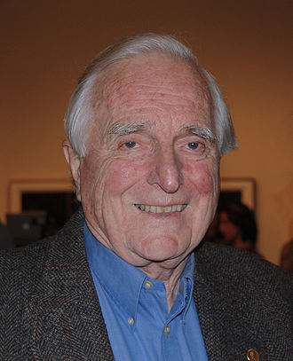
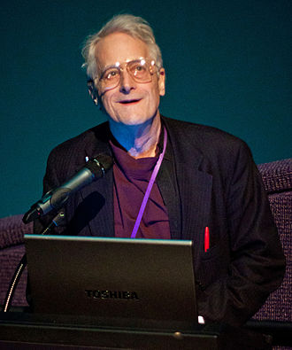
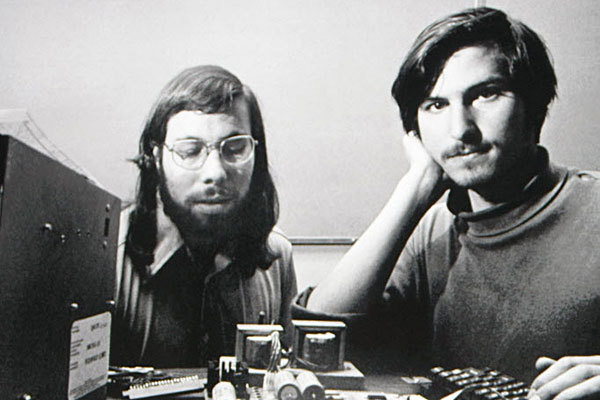
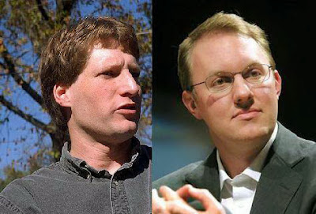
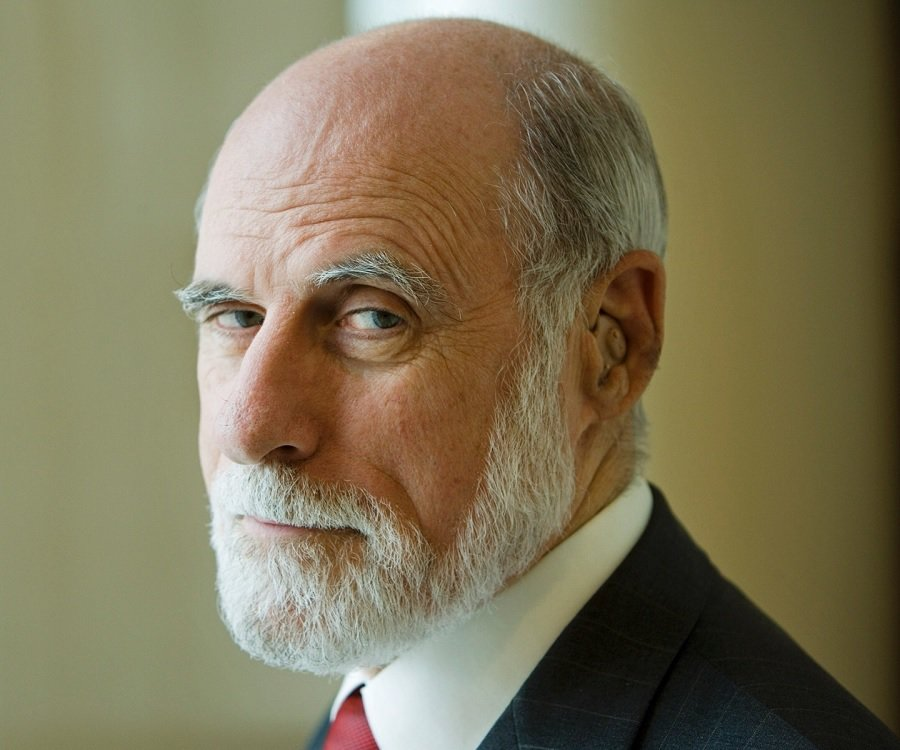

Vannevar Bush was a part of developing the Internet. He worked on hypertext, analog computers, Raytheon, and Memex. He was part of administration in both the Manhattan Project and Office of Scientific Research and Development. The profile tracer was also invented by him and Memex inspired many other computer scientists (Griffin, 2000).

Doug Engelbart, Ph.D
Doug Engelbart helped design the future of computing. He worked on collaborative hypermedia, knowledge management, community networking, the first mouse and keyset, structural hypertext, and organizational transformation. He worked at the Standford Research Institute in the Augmentation Research Center along with a Senior Scientist at Tymshare and McDonnell Douglas Corporation. Then he went on to found the Bootstrap Institute (now the Doug Engelbart Institute (Institute, D.E., 1996).

Ted Nelson, Ph.D
Ted Nelson participated in forming information technology. Some inventions include indirect hypermedia, JOT interface, the back button, ray tracing and casting, hyperthogonal structure, and Project Xanadu. He coined the term "hypertext". Xanadu was his goal to create a universal library to save literature and art. Copies of documents could be made without copyright, but Project Xanadu was never implemented (Griffin, 2000).

Steve Jobs / Steve Wozniak
Steve Jobs and Steve Wozniak are the founders of Apple. Wozniak started off as a kid wanting to build his own computer while Jobs was mostly a business man. Wozniak had all the technical development of Apple I and II while Jobs put themselves out there by pitching their ideas with lots of energy. The Apple was the first mass-marketed personal computer and their popularity continued the grow up until today. Wozniak is worth $100 million while Jobs (when he passed away in 2011) was worth $11 billion (Lloyd, 2015).
Tim Berners-Lee, KBE
Tim Berners-Lee invented the World Wide Web in 1989. This was the idea of an easier way to quickly share information. By using hypertext, he thought of a way to use the Internet to send information. He also had the ideas of HTML, URI, and HTTP. He then created the first web page editor and web browser: WorldWideWeb.app and went on to found W3C (Berners-Lee)

Marc Andreessen / Eric Bina
Marc Andreessen and Eric Bina are a part of Netscape Communications Corporation. They both were a part of creating the prototype for Mosaic which was the first widely used browser. This allowed the Internet to be accessed by everyone much more easily. Andreessen also oversaw other engineers working on more commercial software for the Internet. Netscape Commerce and Netscape Navigator were the first secure server client software on the net at the time. They both received ACM Software System Awards in 1995 (IEEE).
Rob Hartill, Ph.D
Rob Hartill was an early developer of the World Wide Web of the software and infrastructure. He also co-founded the Apache Software Foundation. The Apache web server was the largest server at its time. IMDb, his movie database website, was one of the earliest web sites in the UK and is still used today. He also worked on ArXiv.org to host physics paper and journals (Swansea University).
Lou Montulli, Ph.D
Lou Montulli was an early developer of web browsers. He helped create the text browser Lynx and was one of the first widely used and available web browsers. Then he helped found Netscape Communications and the code for the first Netscape browser. Along with this, he built Fishcam which was the He also created HTTP cookies, blink tag, client pull and server push, HTTP proxying, and helped the implementation of GIFs into browsers (Hope, 2017).

Vint Cerf
Vint Cerf was a designer and developer of TCP/IP protocols with Bob Kahn. This allowed data to be exchanged with end-to-end communications. Channels can be created over networks to transmit messages while IP defines the address and route the information is taking. He later became the vice president of Google (Editors, 2017). See more info of TCP below on Bob Kahn.
Bob Kahn
Bob Kahn was a designer and develper of TCP/IP protocols with Vint Cerf. TCP was intended to replace NCP which was still used during ARPANET. Gateway computers would be able to read the information and then deliver that information to the host. This could allow computers from anywhere to send information and communicate without having to be on the same network (Nia, 2016). See more info on TCP above on Vint Cerf.